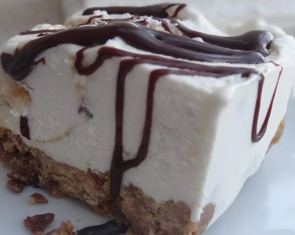

Alaskan Peanut Butter Ice Cream Pie

This has been our dessert of choice for family birthdays! The kids love to choose different flavors of ice cream. In fact, the youngest is 19 today and is having it still! Some favorite ice cream flavors are coffee and cookies and cream.
Ingredients
- ¾ cup creamy peanut butter
- ¾ cup corn syrup (such as Karo®)
- 3 cups crushed sugar-frosted corn flake cereal (such as Frosted Flakes®)
- ½ gallon coffee ice cream, softened
- 2 tablespoons chocolate syrup, or to taste
the steps of how to prepare the alaskan peanut butter ice cream pie
- Combine peanut butter and corn syrup in a bowl; heat in microwave until it can easily be stirred into a smooth mixture, 1 to 2 minutes.
- Stir crushed cereal into the peanut butter mixture; spread into a pie plate to make a crust.
- Spoon softened ice cream over the crust and smooth into a flat layer. Drizzle chocolate syrup over the ice cream layer.
- Put pie in freezer and freeze until firm in the center, at least 30 minutes.